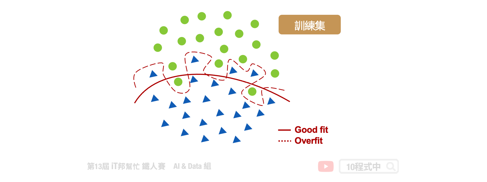
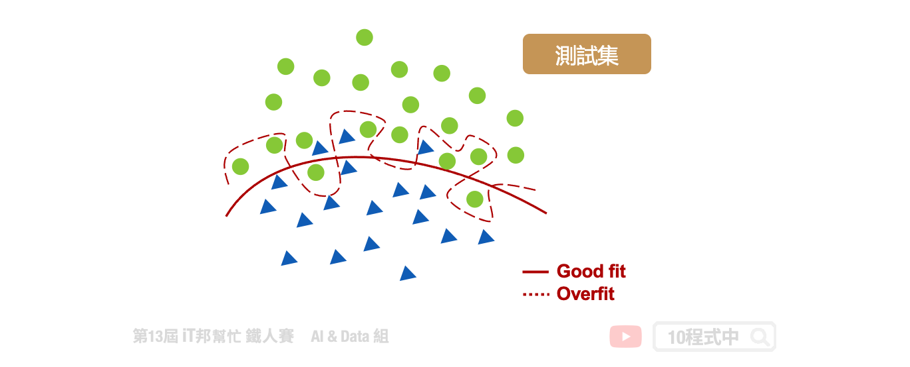
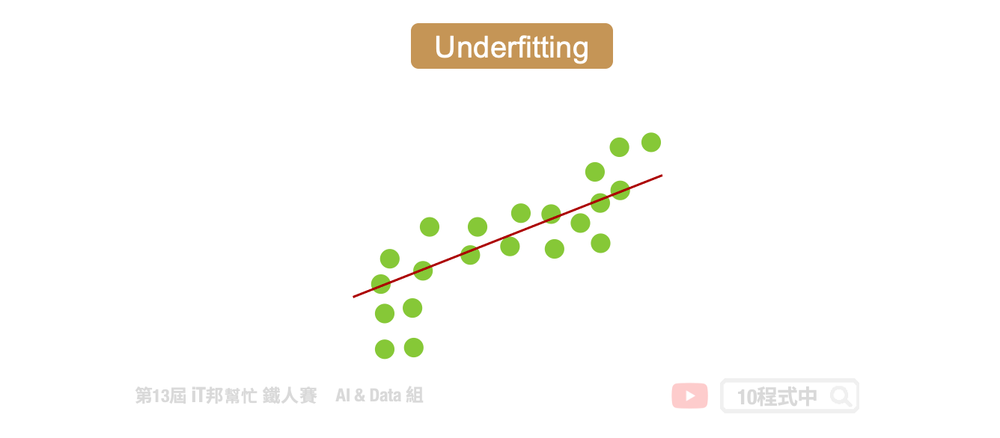

[Day 24] 機器學習 - 不能忽視的過擬合與欠擬合
今日學習目標
- 如何選擇最佳的模型？
- 深入理解度擬合與欠擬合
- Bias-Variance Tradeoff
- 如何避免過擬合與欠擬合？
範例程式：
前言
在機器學習中大家可能最常見的問題是，當訓練好了模型並在測試資料也獲得不錯的成績。於是很開心的落地並部署到真實場域中，殊不知預測出來的結果遠遠不如預期。我想這個痛點大家應該都經歷過，尤其是機器學習的新手。這種情況就是所謂的過度擬合，它是一個在機器學習領域中非常棘手的的問題。當你的模型過度的擬合訓練集，這意味著你的模型過於複雜的去記住所有現有的數據點，進而導致模型的泛化能力不佳，這不是我們期望的。所謂的模型泛化能力是指，當我利用訓練集訓練一個模型後再拿另一組模型沒看過的資料進行預測，最終的預測結果如果在沒看過的資料中依然保持不錯的表現我們就可以說此模型泛化能力強。今天我們將來詳細探討何謂過度擬合，以及該如何去解決它使得模型處於一個適當的狀態。
如何選擇最佳的模型？
通常我們希望預測出來的結果要與實際的數值越接近越好，也就是在模型訓練的過程中我們要想辦法最小化誤差使得模型的誤差越小越好。那麼我們該如何評估訓練出來的模型好壞呢？以下圖為例，假設我們要訓練一個二元分類器。最簡單的方法是找出一條線夠將這兩個類別完整地分開，然而這一條切割的線要長得怎樣才是好的模型呢？從下圖我們可以發現紅色虛線的模型完整的擬合於訓練資料，而紅色實線的模型相對的比較沒有那麼嚴厲，在兩個類別間適當的找出一條平滑的曲線來區隔兩類的資料。

接著我們拿測試資料進行模型預測，可以發現由於紅色虛線的模型已經完整記住了訓練集的趨勢，因此在新的沒看過的資料表現就沒有那麼好了。尤其是在兩類別分隔線附近的資料最能看出端倪。於是我們可以很確定紅色虛線的模型已經過度擬合訓練資料了。另外紅色實現的模型雖然在訓練集中有幾筆會預測錯誤，但是它再測試集資料中一樣保持穩定的預測能力。

從上述的例子我們可以得知，在訓練模型時並非訓練集的誤差越小越好。我們必須同時拿測試集驗證模型的預測能力，目標是訓練集與測試集的平均誤差要越近越好。
一個適當的機器學習工作流程包括： - 切割訓練集與測試集 - 資料視覺化與前處理 - 尋找適合的模型 - 調整模型超參數 - 使用適當的指標評估模型 - 交叉驗證模型
Overfitting vs. Underfitting
過度擬合的反義就是欠擬合，從字面上可以得知模型預測能力是不好的。當模型太簡單時會發生欠擬合，或是加入太多的 L1/L2 正則化限制模型預測能力，使模型在從數據集中學習時變得不靈活。一個過於簡單的模型在預測中往往具有較小的方差(variance)而導致偏差(bias)就會變大。相反的過於複雜的模型會有較的變異進而導致方差大，同時偏差會變小。偏差和方差都是機器學習中的預測誤差的方式。在一般情況下我們可以減少偏差所引起的誤差，但可能會導致增加方差引起的誤差，反之亦然。

這裡我們就要來思考機器學習模型中的 error 從何而來？模型中的 error 是判斷一個模型的好壞依據，但其實我們可以將 error 拆分成兩大部分。分別有 Bias 與 Variance 兩個部分。以實際例子來說，假設輸出 y 是輸入 x 真正的答案，而 ŷ 則是透過模型 f(x) 訓練出來的預測值，我們希望預測的結果要與真實答案越接近越好，當 ŷ≠y 時就會產生 error (誤差)。
Bias-Variance Tradeoff
方差與偏差之間存在著一些關係，我們必須從中找到一個適當的平衡點。因此我們希望透過權衡 bias error 跟 variance error 來使得總誤差達到最小。我們常會以打靶例子解釋方差與偏差之間的關聯性。假設我們發射十次，我們説一個人的打靶技術很精準。其中的精就表示這十個把面上的點彼此間距離都相當近，也就是我的方差非常低(low variance)。另外所謂的準就表示這十個點都離準心很近，也就是我們的偏差非常低(low bias)。

- Underfitting: 過於簡單的模型使得預測結果彈性不高，訓練集與測試集表現都不好。low variance (high bias)。
- Overfitting: 過於複雜的模型使得訓練集完整的被擬合，因此訓練集表現極好，但測試集表現不佳。high variance (low bias)。
Error from Bias
偏差(bias)就是模型的預測與真實值之間的差異。一般我們訓練模型是期望預測的值要與實際的答案要越接近越好。然而當一個簡單的線性模型可能無法完整地擬合到一個複雜非線性的資料集。因此如下圖所示，當一個模型訓練結果偏差過大我們可以得知該模型過於簡單。無論搜集再多的資料，線性的模型永遠無法擬合非線性的曲線。因為比較簡單的模型，他受到不同的資料的影響是比較小的。

- 簡單的模型有大的 bias，小的 variance。
- Error 來自於 bias 很大，稱為欠擬合。
Error from Variance
方差(variance)是指你的模型對於資料集的敏感程度。一個過於複雜的模型會導致輸出的變異性非常大。模型死背所有訓練集中的數據點會導致一個問題發生。當你的訓練資料有需多的隨機誤差或是離群值時，我們又把這些異常值全部擬合進模型裡面，導致學出來的模型過於複雜同時降低泛化能力，對於未知的資料預測的能力就會很差，同時造就了很高的 variance error。因此這樣的結果我們稱為過度擬合。

- 較複雜的模型有小的 bias，大的 variance。
- Error 來自於 variance 很大，稱為過度擬合。
如何避免欠擬合？
通常 bias 大而導致模型過於簡單，而無法擬合訓練資料。我們可以試著增加輸入的特徵，並做一些特徵工程讓模型觀察多點線索。或是調整模型的演算法，使模型更複雜。例如使用項次更高的多項式模型，或是 tree-based 模型中適當的增加樹的深度......等。這裏更值得一提的是，當模型欠擬合時搜集再多的訓練資料是沒有用的。因為簡單的模型比較不會受資料的影響，所以 variance 相對的會比較低而 bias 大，也就是輸出的變化性不大。從這裡我們可以得知簡單的模型受到不同的輸入資料受到的影響是比較小的。因為模型選得不好，再怎麼訓練他的 bias 還是一樣大。
- 增加輸入特徵或特徵工程
- 提高模型複雜度
如何避免過度擬合？
當模型過於複雜過度擬合發生的機率相對提高，我們可以從訓練集與測試集觀察，很容易地檢測模型是否過度擬合。但是我們應該如何避免模型太過於複雜，而導致過度擬合發生呢？通常我們會診斷這些錯誤的來源，這些錯誤來自於兩種，分別為有 bias 與 variance。如果我們能夠診斷出這些錯誤的來源，我們就能挑出適當的方法來改善模型。以下幾點或許能夠幫助你進行建模：
- 搜集更多訓練資料
- 增加訊練集的資料量是有效控制 variance 的方法，並且不會增加 bias。
- 模型添加 Regularization
- 在損失函數中增加一些限制式，降低模型複雜。
- 交叉驗證
- 從訓練集中切出驗證集，並挑出好的模型。而不是從測試集中求最小 error。
- Early Stopping
- 設定當模型連續幾帶都無法改善 error，就立即終止訓練。
- Ensembling
- 透過訓練多個模型，並取得每個模型預測並平均作為最終輸出。
Reference
- Overfitting in Machine Learning: What It Is and How to Prevent It
- WTF is the Bias-Variance Tradeoff? (Infographic)
- 【機器學習】偏差與方差之權衡 Bias-Variance Tradeoff
本系列教學內容及範例程式都可以從我的 GitHub 取得！